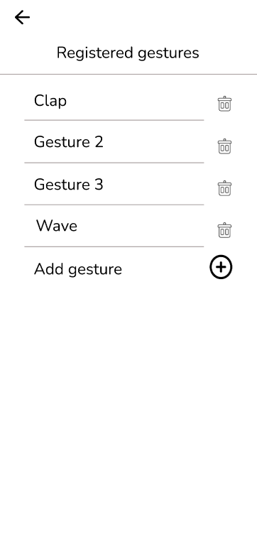

GEstural Remote Control
- Abstract
- Introduction
- Application Prototype
- Interaction Design Patterns
- Interaction types/paradigms
- Personas
- Storyboards
- User Flow
- Affective factors & emotions
- Contributions
1. Abstract
This paper focuses on the design of the UI and UX for a system with gestural remote control
presenting a walkthrough of the steps taken for the implementation. Additionally, we will present
a few personas for our system and some storyboards showing examples of the usage of the system.
Furthermore, we will go through a few technical details, giving some examples of Interaction Design
Patterns used in the design, a few interaction type paradigms, the user flow of the application and
some screenshots of the application prototype explaining how it works.
2. Introduction
The project consists of a mobile app and web based desktop UI for a gesture control system. The front end supports
detecting new devices along with their associated controls, setting certain devices to be in a certain room,
assigning recorded gestures to controls for the devices (with the caveat of only being allowed to use a gesture
once per room) and record new gestures (mobile only feature). The entire system comes as an integrated solution,
complete with CCTV cameras and dedicated mini-datacenter.
3. Application Prototype
The first image shows a basic login for the system with some given credential. Then it goes into the main page
which is the second image, showing the rooms and the devices connected to the system and having gestures attached
to them. If we tap the third button of the bottom navigator it will take us to the menu that adds another device
that has no gestures yet, to the system, that menu is showed by the third image. The fourth image represents
the menu from the last button from the navigator, and it shows a list of all the gestures registered in the system
having different names chosen by the user

If we choose a device in the main menu, for example the TV, it will open the menu from the first image.
We have the actions that already have gestures assigned to them. If we press the button in the left of an action
we can modify the chosen gesture, while the button on the right will remove the action from the list completely.
If we press the + button on the bottom we can add a new action to the list with a gesture assigned to it. The button
will take us to the menu from the second image. After we select one of the available actions it will take us
to the menu from the third image.

The button remaining is the second button from the navigation bar that will allow us to add another gesture
to the registered gestures list. The first image will show how the app looks and will ask us to move in a place
with better camera coverage. After that, when the gesture can be recorded a stickman will be on the screen showing
what we are doing and we can press start recording. After we record we press stop recording and then we can finish
the recording of the gesture, but it's recommended to record it a few more times to be sure it was recorded correctly.
4. Interaction Design Patterns
The design of the application is a really simplistic one, using some of the more common design patterns
- Bottom Navigator: Used for putting the primary options at the bottom of the screen
- Tabs: Every function of the app is in a different tab
5. Interaction types/paradigms
One of the most important aspects of the system is that it has various interaction types/paradigms such as
- Touch-based interaction: One of the essential types of interaction on the mobile version of the app
- Direct Manipulation: Also essential if we use the web app on the desktop
- Gestural: The heart of the system, using gestures for different actions that the user sets
- Natural language: The application also has the option of vocal commands
6. Personas
The system is intended for various types of people such as:
- The primary persona is the tech-savy. He wants to control as much technology as possible from his house
in the easiest ways, making a gestural remote control system perfect for that purpose
- The secondary persona is the average homeowner that wants to use a smart assistant in his house.
He wants to use the system just because he can, for him is not something essential.
- The negative persona is a person paralyzed in a wheelchair or with limited movement. The system revolves
around gestures, meaning that a person with limited movement will have difficulties in using the system or
even will not be able to use it at all.
- The supplemental persona refers to someone working at the system. The person has to use the app for the
sole purpose of testing its functionalities and features.
7. Storyboards
Here we have 2 storyboards that show the way the user uses the app. The first storyboard shows us how
the user records and adds another gesture to the system. The second one shows how the user controls the
action of a device with the gesture.
8. User flow
For the user flow we chose a very simplistic approach that would not overwhelm anyone. Suggestive icons for
the menu, images for the devices and for the gestures, also clear commands for the user.
9. Affective factors & emotions
We tried to make an app that is not too crowded in different areas, making it easy to navigate, pretty
intuitive actions and a simplistic approach. Additionally, we adapted the vocal assistant in a way that it
feels familiar when talking to it.
10. Contributions
- Cibotariu Lavinia: Sketches, Storyboards, Personas, Interactive UI prototype
- Rotariu Gabriel: User flow, Personas, Interactive UI prototype, Documentation
- Stefanoaia Mihai: Personas, Interactive UI prototype, Documentation, Video presentation